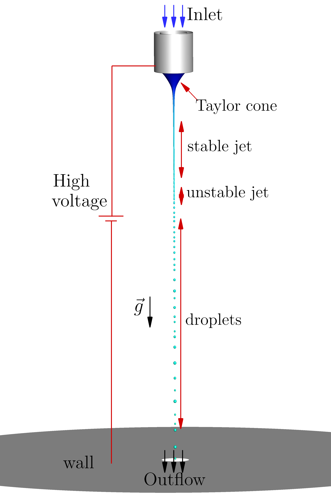
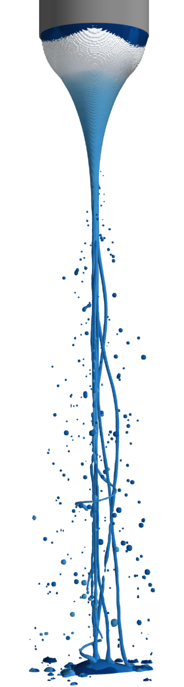
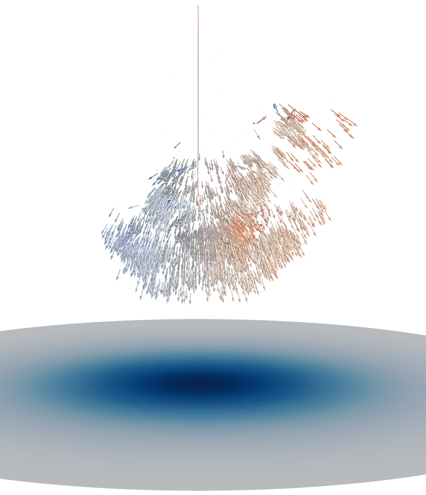

4. Performance of Electrohydrodynamic Jets
This chapter presents the main results of the study on the performance of electrohydrodynamic jets, including:
- Axisymmetric jets for the study of the cone-jet transition and axial instabilities
- A three-dimensional model for the study of three-dimensional instabilities
- Adaptive-mesh modelling for the computation of jet atomization into droplet plumes.
This chapter is therefore divided into the following sections:
4.1. Axisymmetric Jets[1]

4.2. Three-Dimensional Instabilities[2]

4.3. Coulomb Expansion[3]

References
- [1] S. Cândido, J. C. Páscoa, On modal decomposition as surrogate for charge-conservative EHD modelling of Taylor Cone jets, International Journal of Engineering Science, 2023. DOI
- [2] S. Cândido, J. C. Páscoa, Dynamics of three-dimensional electrohydrodynamic instabilities on Taylor cone jets using a numerical approach, Physics of Fluids, 2023. DOI
- [3] S. Cândido, J. C. Páscoa, Numerical simulations of the atomization of electrified liquid jets with a 3D coupled VoF/LPT model, (forthcoming)